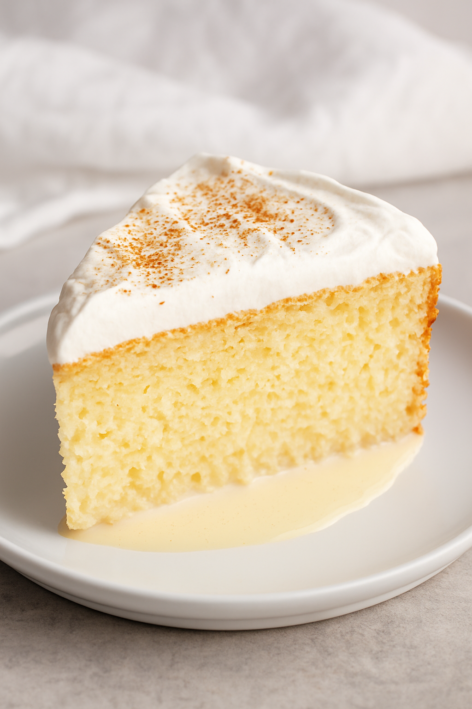

The Story Behind This Recipe
The Pastel de Tres Leches is a classic dessert from Latin America.
It is famous for its soft, spongy texture soaked in three kinds of milk —
evaporated milk, condensed milk, and whole milk with cream.
In Mexico, some people add a splash of brandy for extra flavor!
Ingredients
-
1 cup of flour
- 1½ teaspoons of baking powder
- 5 eggs
- 1 cup of sugar
- 1/3 cup of milk
- 1 can of evaporated milk
- 1 can of condensed milk
- 1 cup of heavy cream
- 1 teaspoon of vanilla extract
- Optional: 1 tablespoon of brandy
Steps / Procedure
- Preheat the oven to 350°F (175°C).
- Mix flour and baking powder in one bowl.
- In another bowl, beat eggs and sugar until fluffy.
- Combine both mixtures and add milk and vanilla.
- Pour into a greased pan and bake for 30 minutes.
- Let it cool, then pour the three-milk mixture evenly over the cake.
- Refrigerate for 2 hours before serving.
Tips
For a richer flavor, add a few drops of brandy to the milk mixture.
You can also decorate with fresh strawberries or cinnamon powder.
Nutritional Information
Each serving (1 slice) contains approximately 320 calories,
8g of protein, and 12g of fat.
Image

Related Link
You can find more variations of this recipe at